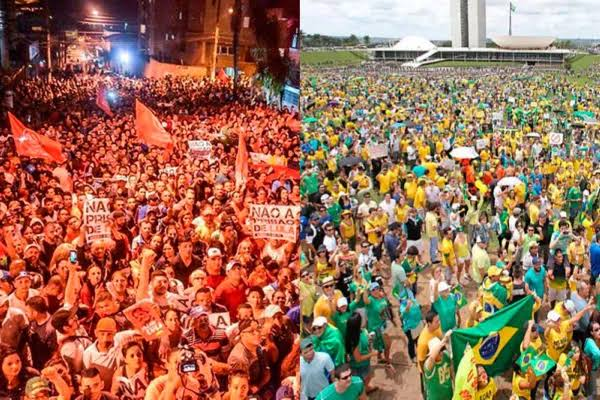
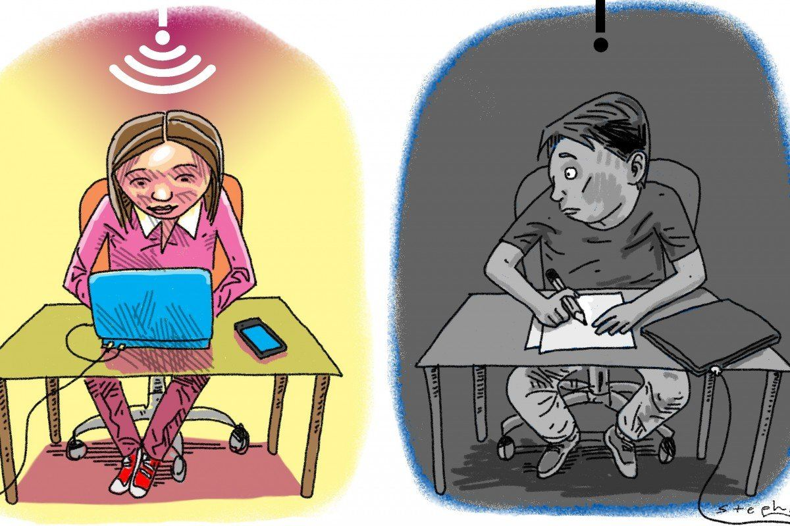
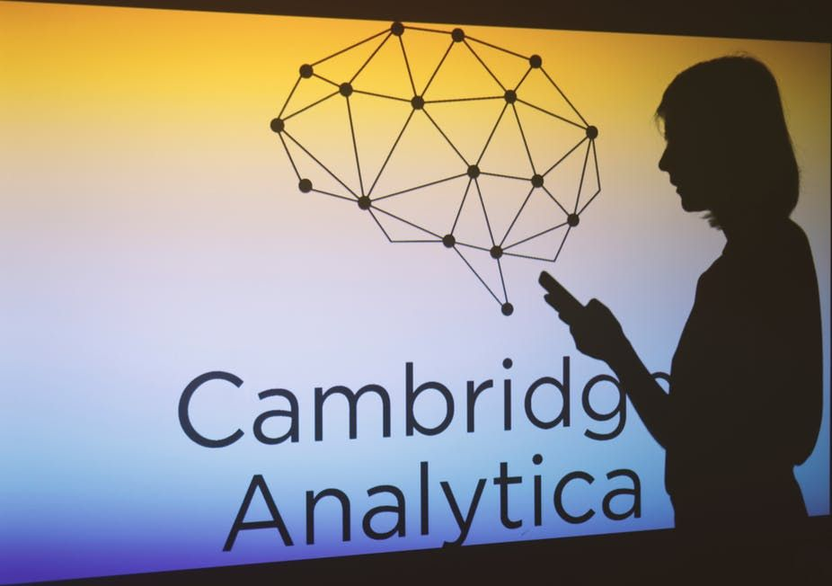

Caio Marcos Ambrósio
Função
POLÍTICA · TECNOLOGIA · SOCIEDADE
Inteligência Artificial e Períodos Eleitorais
Função
Função
Função
Função
Função
Função
Às vésperas de uma eleição, um vídeo falso que atribui a um candidato uma declaração inexistente pode circular antes que a checagem alcance o público. A inteligência artificial não é, por si só, uma ameaça à democracia; o risco surge quando a capacidade de produzir imagens, vozes e vídeos convincentes se combina à lógica comercial das plataformas e à fiscalização insuficiente, favorecendo falsidades, distorcendo o debate público e comprometendo a autonomia do eleitor. Não cabe, portanto, responsabilizar apenas o cidadão por reconhecer manipulações: empresas que lucram com a atenção e instituições que protegem o processo democrático também devem responder pelo problema.
Essa dinâmica encontra explicação em A sociedade do espetáculo, de Guy Debord, que analisa como as relações sociais passam a ser mediadas por imagens e representações, transformando a atenção em mercadoria; no ambiente digital, essa lógica se manifesta em publicações que provocam indignação, medo ou antagonismo ideológico e ampliam a receita publicitária. A polarização, assim, torna-se economicamente vantajosa para empresas e produtores de conteúdo, pois o conflito atrai audiência e prolonga o engajamento, mesmo quando empobrece a discussão pública.
Esse cenário se agrava na cultura da pós-verdade, conceito instituído na revista americana “The Nation” por Steve Tesich em 1992, em que crenças e emoções podem prevalecer sobre evidências na formação da opinião. Quando uma informação confirma convicções políticas, seu compartilhamento tende a ocorrer sem verificação, fazendo com que a identificação ideológica se sobreponha à busca pela veracidade dos fatos. Dessa forma, conteúdos enganosos deixam de ser apenas informações falsas e passam a reforçar divisões sociais, dificultando o diálogo entre grupos e a construção de referências comuns.
A resposta não pode depender apenas da cautela individual. Cabe ao Tribunal Superior Eleitoral exigir medidas verificáveis das plataformas, incluindo um painel público, atualizado com agências de checagem, que reúna conteúdos eleitorais desmentidos e alerte usuários antes do compartilhamento. A educação midiática deve complementar a responsabilização empresarial e a fiscalização pública. A integridade eleitoral depende de informação confiável, pois o eleitor precisa decidir sem manipulação.
A inteligência artificial tornou-se uma tecnologia de uso cotidiano. Sistemas generativos são utilizados para organizar informações, apoiar estudos, realizar tarefas profissionais e produzir textos, imagens, áudios e vídeos. Essa presença crescente também alcança a esfera política, pois as mesmas ferramentas que facilitam o acesso ao conhecimento podem selecionar informações, resumir propostas, responder a dúvidas sobre candidaturas e criar conteúdos capazes de circular em grande escala.
A questão democrática surge quando essa mediação interfere na qualidade das informações disponíveis ao eleitor e na capacidade das instituições de preservar regras comuns para o debate público.
O problema não se limita à produção deliberada de notícias falsas. Modelos generativos podem apresentar informações incorretas ou desatualizadas de forma convincente, utilizar fontes que não sustentam integralmente suas afirmações e responder de maneira diferente conforme a formulação da pergunta.
O objetivo da revista Infopolis, edição 01 · 2026, é analisar os efeitos da IA sobre a democracia por meio de quatro eixos.

Entre os brasileiros que já utilizavam IA generativa, 84% declararam finalidades pessoais, 53% a empregavam em pesquisas ou trabalhos escolares e universitários e 50% em atividades profissionais. Entre os usuários de 16 a 24 anos, 87% informaram uso pessoal, 66% uso em pesquisa, escola ou faculdade e 41% uso profissional (CETIC.BR, 2025a). A tecnologia, portanto, não se restringe a um único setor. Ela participa simultaneamente da vida privada, da formação educacional e de opinião do indivíduo.
FONTE · CETIC.BR, 2025a — dados citados no texto.
A adoção da inteligência artificial generativa ocorre de forma desigual entre os grupos sociais a redor do mundo. Nos países da OCDE, mais de um terço da população utilizou essas ferramentas, mas o índice chegou a 75% entre estudantes com 16 anos ou mais e a 12,5% entre aposentados e demais pessoas economicamente inativas. Essa diferença importa para a democracia porque o acesso à IA pode influenciar a capacidade de buscar, produzir e avaliar informações. Se alguns grupos conseguem usar essas ferramentas e desenvolver competências digitais enquanto outros ficam à margem, a participação no debate público pode se tornar ainda mais desigual. Nesse cenário, a circulação de informações distorcidas e as tentativas de manipulação podem encontrar uma sociedade menos preparada para identificá-las, fragilizando a qualidade do debate democrático.
Os usos educacionais, profissionais e pessoais impedem que a IA seja tratada como uma tecnologia essencialmente negativa. Ferramentas generativas podem facilitar a localização e a organização de informações, explicar documentos complexos, apoiar atividades criativas e ampliar possibilidades de comunicação. No campo eleitoral, podem auxiliar cidadãos a compreender regras, localizar dados públicos e organizar perguntas sobre políticas e propostas. Esses benefícios dependem, entretanto, da qualidade das respostas, da transparência das fontes e da capacidade do usuário de conferir o conteúdo recebido.
A desigualdade de orientação é um limite relevante. Sete em cada dez estudantes do Ensino Médio já utilizavam IA generativa em pesquisas escolares, mas somente 32% afirmavam ter recebido orientação da escola sobre o uso dessas tecnologias. Além disso, apenas 47% dos estudantes usuários de Internet disseram ter recebido orientação de professores sobre como verificar se uma informação encontrada on-line era verdadeira (CETIC.BR, 2024; CETIC.BR, 2025c). A expansão do acesso, portanto, não garante por si só a formação necessária para avaliar respostas automatizadas; é necessária uma

Como mensagens sintéticas disputam confiança, contexto e decisão.
Um áudio pode imitar a voz de um candidato, um vídeo pode colocá-lo em uma situação que nunca existiu, uma resposta automática pode apresentar uma informação errada de forma que a narrativa induza quem leu a acreditar que é verdadeira. Em uma eleição, essas possibilidades se tornam ainda mais críticas, pois afetam as condições em que cada pessoa forma sua opinião e decide em quem votar. A inteligência artificial generativa amplia a capacidade de produzir e adaptar mensagens políticas. Seu uso convive com uma dificuldade anterior à própria tecnologia: reconhecer o que merece confiança em meio a informações que chegam por redes sociais, aplicativos de mensagens e pessoas próximas. Quando a fabricação de conteúdo se torna mais rápida, verificar sua origem e seu contexto exige ainda mais atenção.
Os deepfakes são conteúdos sintéticos que simulam a imagem ou a voz de pessoas, e podem atribuir a elas falas e ações que não ocorreram. Seu efeito depende do uso e do contexto, já que uma montagem reconhecida como humor e uma falsificação apresentada como registro verdadeiro não são equivalentes, embora ambas possam empregar ferramentas semelhantes. Desde antes da IA generativa, já era muito comum a difusão de imagens alteradas por meio de programas de edição como Photoshop, porém, com o tempo as pessoas passaram a distinguir com maior facilidade o que era real e o que era editado. Com o ad evento da geração de imagens com IA e a evolução dos modelos de linguagem (LLMs), as imagens ficam cada vez mais realistas, dificultando a distinção do que são vídeos reais e o que é forjado. O relatório da Data Privacy Brasil sobre a pré-eleição de 2026 identificou 413 casos de IA em publicações políticas entre 1 de janeiro e 15 de agosto. Cerca de 80% eram deepfakes, 68% dos conteúdos eram vídeos e 30% imagens. Aproximadamente 60% foram classificados como sátira e 40% como desinformação. Essa diferença impede tratar toda produção artificial como tentativa de enganar. Também mostra por que é necessário observar como a mensagem se apresenta ao público. Instagram, TikTok e X concentraram 88,4% dos casos identificados. Esses resultados descrevem o material localizado pelo monitoramento, sem representar a totalidade das publicações políticas nas plataformas. Ainda assim, ajudam a situar os espaços em que a produção sintética circula e encontra seus públicos.
FONTE · Observatório IA nas Eleições — Aláfia Lab e Data Privacy Brasil. IA na pré-eleição: Principais achados e tendências (2026), p. 11, tabela 4.
A presença de IA nos conteúdos falsos também cresceu no levantamento do Observatório Lupa. Foram identificados 39 casos em 2024 e 159 em 2025, um aumento de aproximadamente 308%. A participação desses conteúdos nas checagens passou de 4,6% para 25%. O levantamento abrange conteúdos falsos em geral, e não apenas em período eleitoral. Seus números mostram a expansão do uso da tecnologia no material examinado pela agência. A facilidade de produzir falsificações merece atenção. Em testes divulgados pela Associated Press em 2024, seis ferramentas de clonagem de voz foram submetidas a 240 tentativas de criação de falsificações eleitorais com vozes de oito políticos dos Estados Unidos e da Europa. Em 80% das tentativas, produziram áudios considerados convincentes. O resultado se refere àquelas ferramentas e condições de teste, mas evidencia que a aparência de autenticidade pode ser fabricada.
FONTE · Observatório Lupa. Fakes com IA crescem 308% em um ano, revela estudo inédito da Lupa (05/02/2026).
Há outro caminho pelo qual a IA interfere na informação eleitoral: o uso de chatbots para esclarecer dúvidas. Nesse caso, uma resposta incorreta pode surgir sem que alguém tenha solicitado uma mentira, pois sistemas generativos podem produzir informações inventadas, incompletas ou desatualizadas, às vezes acompanhadas de explicações que parecem confiáveis, é a famosa “alucinação” dos modelos de IA. Durante as eleições gerais do Reino Unido de 2024, pesquisadores do Reuters Institute analisaram 100 perguntas eleitorais e 300 respostas de três chatbots. O ChatGPT-4o apresentou respostas consideradas falsas ou parcialmente corretas em 22% dos casos, e o Perplexity, em 17%.
Os percentuais retratam aquele estudo e aquele momento, não uma medida permanente do desempenho das ferramentas, que vem evoluindo constantemente, porém, a grande questão é que os LLMs são treinados com dados da internet, que podem ter sido manualmente adulterados em blogs, vídeos editados, ou até mesmo com a IA se treinando com erramos anteriores dela mesma que foram publicados sem revisão. A presença de referências também exige cuidado. Em uma avaliação de quatro mecanismos de busca com IA generativa, pesquisadores de Stanford encontraram apenas 51,5% das frases completamente apoiadas pelas fontes apresentadas. Um link pode ajudar na conferência, mas sua presença não garante que a página citada sustente o que foi afirmado.
FONTES · Reuters Institute; Stanford. Estudos citados no conteúdo editorial.
Uma mensagem não chega acompanhada apenas de palavras e imagens, ela traz a confiança atribuída a quem a compartilhou. O Painel TIC sobre integridade da informação, do Cetic.br, registrou que 83% dos usuários pesquisados afirmavam checar ou conferir informações com alguma frequência. Portanto, seria impreciso descrever esse público como inteiramente indiferente à verificação. Entre os usuários que realizavam essa conferência, 69% diziam fazê-la sempre ou na maioria das vezes quando a informação vinha de alguém desconhecido ou em quem não confiavam. Quando vinha de um influenciador que seguiam, o percentual era de 49%. A proximidade com o emissor pode reduzir o cuidado com a mensagem, como o mesmo levantamento apontou que, 35% disseram já ter sido avisados de que compartilharam uma informação exagerada, enganosa ou falsa.
FONTE · Cetic.br | NIC.br. Painel TIC — Integridade da Informação 2025, publicado em 2026, p. 81, gráfico 11.
O conceito de pós-verdade, instituído na revista americana "The Nation" por Steve Tesich em 1992, ajuda a interpretar essa relação. Ele descreve situações em que emoções, crenças e identificação com grupos pesam mais na formação da opinião do que os fatos objetivos. Uma falsificação pode encontrar aceitação porque parece confirmar algo em que a pessoa já acredita. A IA amplia a oferta de mensagens capazes de disputar essa confiança, sem eliminar os vínculos sociais e políticos que orientam sua recepção. Isso não permite concluir que qualquer conteúdo produzido por IA convença o público, nem que determine um resultado eleitoral. Os estudos reunidos apontam dificuldades de reconhecimento e possibilidades de persuasão, mas o efeito de uma mensagem depende também de quem a recebe e das circunstâncias em que circula. Preservar essa distinção evita transformar riscos documentados em certezas que as pesquisas não demonstram. Conferir uma informação depende de oportunidades de aprendizagem e familiaridade com o ambiente digital. Segundo a TIC Domicílios 2025, o uso de IA generativa alcançava 59% dos usuários de Internet com ensino superior e 17% daqueles com ensino fundamental. A diferença revela uma apropriação desigual da tecnologia, embora não permita medir, por si só, a capacidade de cada grupo para reconhecer desinformação.
A formação também não acompanha automaticamente o acesso. Sete em cada dez estudantes do Ensino Médio já utilizavam IA generativa em pesquisas escolares, mas somente 32% afirmavam ter recebido orientação da escola sobre seu uso. Na TIC Educação 2024, apenas 47% dos estudantes usuários de Internet relataram orientação de professores para verificar se uma informação encontrada on-line era verdadeira. Esses dados tornam insuficiente uma explicação baseada apenas no descuido individual. Uma sociedade que incorpora ferramentas de informação sem oferecer formação para compreendê-las deixa parte de seus cidadãos com menos recursos para avaliar o que recebe. A responsabilidade pela qualidade do debate eleitoral envolve também escolas, plataformas, produtores de conteúdo e instituições públicas.

A discussão sobre desinformação alcança a maneira como a política é apresentada. No conceito de sociedade do espetáculo, desenvolvido por Guy Debord, as relações sociais são mediadas por imagens e representações. Aplicada ao ambiente eleitoral, essa perspectiva ajuda a examinar situações em que a imagem construída de uma liderança ocupa mais espaço do que a discussão de suas ações e propostas. O caso Cambridge Analytica oferece um antecedente dessa preocupação. A empresa utilizou dados pessoais para criar perfis de eleitores e direcionar publicidade política. As investigações documentaram práticas enganosas de coleta e uso de dados, mas não demonstraram que a empresa tenha determinado o resultado da eleição presidencial norte-americana de 2016. Sua relevância está em mostrar como diferentes pessoas podem receber representações políticas selecionadas conforme características inferidas sobre elas. A IA generativa acrescenta a possibilidade de produzir mensagens e imagens adaptadas em grande escala. O problema social envolve, então, quem controla essas representações e quanto o eleitor conhece os mecanismos que selecionam o conteúdo apresentado. Uma publicação pode influenciar percepções ao ridicularizar ou expor alguém, mesmo quando não é tomada como um registro literal. O mapeamento da FGV sobre as eleições de 2024 identificou inclusive, conteúdos manipulados associados à violência política contra candidatas mulheres.
A identificação do conteúdo sintético é uma forma de oferecer ao público uma informação essencial sobre sua origem. Uma notícia publicada pelo TSE em 8 de outubro de 2026 apresenta um caso concreto: o Tribunal determinou, por unanimidade, a remoção de três publicações de Flávio Bolsonaro no X, questionadas em representação apresentada pela Federação Brasil da Esperança como suposta propaganda eleitoral antecipada negativa contra Lula. Segundo o TSE, uma das publicações simulava com IA a imagem de Lula em uma situação inexistente. O relator do caso, o ministro André Mendonça, considerou que a falta de identificação do uso da tecnologia descumpria o dever de transparência, mesmo diante da aparência caricatural do conteúdo. As outras duas publicações foram examinadas por associarem o então pré-candidato a organizações criminosas sem confirmação mínima dos fatos. [Fonte: TSE, 8 de outubro de 2026.]
O caso permite observar uma regra em aplicação, sem servir como medida da conduta de um campo político inteiro. A exigência de transparência deve ser considerada a partir do conteúdo e das normas aplicáveis, independentemente de quem produz a mensagem ou de quem é atingido por ela. A resposta institucional também enfrenta limites de velocidade e capacidade técnica. Nas eleições de 2024, o Sistema de Alertas de Desinformação Eleitoral recebeu 5.250 apontamentos entre 4 de junho e 27 de outubro. Esses registros eram comunicações submetidas à análise e não 5.250 casos comprovados de desinformação ou produzidos por IA. Em 2026, nove plataformas apresentaram planos de conformidade eleitoral ao TSE, em uma tentativa de prevenir e reduzir riscos antes que dependam apenas de uma remoção posterior. Uma informação confiável precisa poder ser localizada, compreendida e conferida. Para o eleitor, isso significa encontrar fontes que sustentem as afirmações e conhecer a origem das imagens e vozes que recebe. Para quem produz e distribui conteúdo, significa assumir responsabilidade por sua apresentação. A autonomia de escolha se fortalece quando essas condições fazem parte do ambiente eleitoral, em vez de dependerem exclusivamente da capacidade de cada pessoa de descobrir sozinha o que foi fabricado.
Quando a disputa política se organiza como torcida, a imagem passa a valer mais que o programa.
No primeiro turno de 4 de outubro de 2026, Flávio Bolsonaro, do PL, recebeu 47,03% dos votos válidos, enquanto Lula, do PT, 45,16%. A diferença, de 1,87 ponto, parece mais o placar de uma final de campeonato do que o resultado de uma escolha entre projetos de país, dividido entre apenas dois candidatos.
A comparação com o esporte não é só figura de linguagem. Em 1967, Guy Debord já descrevia as eleições como parte de uma série de confrontos que mobilizam um interesse quase lúdico, ao lado do esporte de competição. Esta seção sustenta, com números, três pontos: a polarização brasileira é intensa nos afetos e estreita no programa; essa distância é favorecida por um consenso econômico que pouco aparece na campanha; e a inteligência artificial chega para abastecer justamente o lado dos afetos.
O eleitorado de 2026 se divide quase nos mesmos lugares e nas mesmas proporções de 2022. A Quaest chama esse quadro de calcificação: Lula preserva a força no Nordeste, o campo bolsonarista mantém vantagem no Sul e em parte do Centro-Oeste, São Paulo segue dividido e Minas Gerais permanece perto do equilíbrio. A primeira pesquisa do instituto para o segundo turno marca 46% para Flávio e 44% para Lula.
A rejeição ajuda a medir o tamanho do fosso. Em levantamento da Quaest, 53% diziam que não votariam em Lula de jeito nenhum, e 55% rejeitavam Flávio. Como a soma chega a 108%, ao menos 8% do eleitorado rejeita os dois ao mesmo tempo. E, qualquer que seja o resultado em 25 de outubro, o vencedor governará um país em que mais da metade declarou que jamais votaria nele.
A ciência política chama esse fenômeno de polarização afetiva: gostar de um campo e rejeitar intensamente o outro. Com dados de 2002 a 2018, Fuks e Marques mostraram que ela é mais forte em relação aos candidatos do que aos partidos. Em 2018, cerca de 24% dos eleitores atingiam o grau máximo de polarização diante dos líderes, contra 9,4% diante das legendas, uma proporção de 2,6 para 1. A nota média que os eleitores de Bolsonaro deram ao PT em 2018 foi 2,69, ante 3,81 dada pelos eleitores de Aécio em 2014: uma queda de 29% na estima pelo adversário.
Debord chamava de vedete a pessoa transformada em imagem, oferecida ao público como modelo de identificação. O caso brasileiro dá forma concreta a essa ideia. A Quaest descreve a disputa como polarizada entre Lula e o campo de Jair Bolsonaro, agora representado por Flávio: a imagem sobrevive à prisão do líder e passa adiante pelo sobrenome. Do outro lado, Lula, que em 2022 se candidatou pela sexta vez, disputa em 2026 sua sétima eleição presidencial. Os dois polos se organizam em torno de figuras, mais do que de programas.
Um estudo da FESPSP comparou duas pesquisas nacionais: 2.400 entrevistas em 2006, sobre Lula e Alckmin, e 1.500 em maio de 2026, sobre Lula e Bolsonaro. Os números mostram uma mudança na qualidade do vínculo com a política, não apenas na sua intensidade.
Em 2006, para cada eleitor polarizado havia 1,7 eleitor que gostava de um lado sem hostilizar o outro (32% para 19%). Em 2026, a relação se inverteu: são 0,5 (16% para 31%). A rejeição sem adesão, que é a vaia sem time, mais que triplicou, de 6% para 19%. Somadas, rejeição sem adesão e indiferença passaram de 18% para 38% do eleitorado.
Isso ajuda a ler o dado de que 69% dos brasileiros estão fora da polarização afetiva estrita. Essa maioria não é necessariamente moderada: boa parte dela vaia ou apenas assiste. É a figura do espectador em Debord, que contempla o espetáculo sem participar dele [2]. Fuks e Marques já mostravam que a polarização se concentra nos eleitores mais engajados, num país em que só 8,44% diziam se interessar por política em 2019. A imagem resultante é a de uma arquibancada: poucos em campo, muitos gritando ou só olhando.
Felipe Nunes e Thomas Traumann, a partir de 99 mil entrevistas feitas entre 2021 e 2023, compararam esse enrijecimento ao das torcidas de futebol. A metáfora de Debord ganhou, portanto, base estatística.
O núcleo da política econômica brasileira mudou pouco desde 1999. Naquele ano entrou em vigor o tripé macroeconômico: equilíbrio fiscal, medido pelo superávit primário, metas de inflação e câmbio flutuante. Com ajustes e tropeços, o arranjo atravessou 27 anos e cinco presidentes de campos distintos. Desde 2021, soma-se a ele a autonomia do Banco Central, garantida pela Lei Complementar 179.
Os programas de 2026 se movem dentro dessa moldura. Lula promete manter o arcabouço fiscal e transformar um déficit de 0,5% do PIB em 2026 num superávit de 1,5% em 2030, e os trechos divulgados de seu programa não propõem alterar a autonomia do Banco Central. Flávio promete cortar R$ 250 bilhões em gastos, mas o coordenador econômico de sua campanha afirmou que um eventual governo não privatizaria Petrobras, Banco do Brasil e Caixa. Flávio também mudou de posição e passou a defender o fim da escala 6x1, bandeira do adversário.
As diferenças existem e não são pequenas. Flávio propõe um plano de corte de despesas chamado Tesouraço e a retomada do Programa Nacional de Desestatização, além de revisar a reforma tributária e acabar com o split payment. Lula aposta em investimento público pelo Novo PAC e em políticas de redução da desigualdade. Mas os dois prometem ajuste fiscal, num país com dívida bruta de 82,9% do PIB em agosto de 2026 e com uma Selic que chegou a 15% ao ano entre junho de 2025 e janeiro de 2026. A divergência está na dose e no instrumento, não na moldura.
Esse quadro contrasta com a intensidade da disputa. Nunes e Traumann concluem que o centro do confronto está no plano moral, não nas plataformas econômicas. Fuks e Marques encontraram partidários de campos opostos com posições muito parecidas sobre o combate à desigualdade. Uma diferença de 1,87 ponto nas urnas e rejeições acima de 50% para os dois lados se formam, portanto, sobre programas que convergem no essencial.
Debord descreveu esse mecanismo como uma falsa escolha: espetáculos concorrentes que encenam oposições e mobilizam paixões em confrontos que vão do esporte às eleições. A leitura contemporânea é que, quando as decisões econômicas centrais ficam relativamente protegidas da disputa eleitoral, o que sobra para a campanha é a imagem. E é no terreno da imagem que, como afirma o editorial, as plataformas lucram com o conflito.
Há uma leitura oposta, e ela precisa ser considerada. A autonomia do Banco Central foi concebida justamente para proteger a política monetária de pressões eleitorais e dar previsibilidade à economia. A estabilidade é um valor em si. O argumento desta seção não é contra o tripé, mas sobre um efeito colateral: com menos em jogo no programa, a disputa se desloca para a identidade.
Se a eleição se decide no plano da imagem, a inteligência artificial generativa barateia justamente a matéria-prima da disputa. O relatório da Data Privacy Brasil identificou 413 casos de IA em publicações políticas entre 1º de janeiro e 15 de agosto de 2026. Cerca de 80% eram deepfakes; 60% foram classificados como sátira e 40% como desinformação. Em números absolutos, são cerca de 248 peças satíricas e 165 de desinformação.
A proporção de sátira é reveladora. Uma montagem que ridiculariza o adversário não precisa ser tomada como verdadeira para cumprir sua função: ela funciona como o canto da arquibancada contra o time rival. Os dados não provam que esse material causou o salto da rejeição sem adesão, de 6% para 19% em vinte anos. Mas os dois movimentos apontam na mesma direção: uma política vivida mais como hostilidade do que como adesão.
A circulação também tem endereço. Instagram, TikTok e X concentraram 88,4% dos casos, plataformas cuja receita depende de atenção. No material checado pelo Observatório Lupa, conteúdos com IA passaram de 39 em 2024 para 159 em 2025, e sua participação nas checagens subiu de 4,6% para 25%: um peso 5,4 vezes maior em um ano.
A torcida também baixa a guarda. Segundo o Cetic.br, entre os usuários que costumam checar informações, 69% dizem fazê-lo sempre ou na maioria das vezes quando a mensagem vem de um desconhecido; quando vem de um influenciador que seguem, o índice cai para 49%. São 20 pontos a menos de cuidado quando a imagem chega por alguém do próprio lado.
Nos Comentários sobre a sociedade do espetáculo, de 1988, Debord descreveu um estágio do espetáculo em que o falso deixa de encontrar réplica. Hoje, a fabricação circula mais rápido do que a verificação. O deepfake não inaugura a lógica do espetáculo, mas a torna mais barata, mais rápida e capaz de se adaptar ao gosto de cada torcida.
O efeito mais direto é a perda do debate. Debord definia o espetáculo como o contrário do diálogo , e boa parte dos brasileiros concorda com o diagnóstico. Numa pesquisa Ipsos-Ipec de 2023, 62% disseram que a polarização empobrece o diálogo e a relação entre as pessoas, 58% que ela enfraquece a democracia e 63% que os debates se tornaram estressantes e frustrantes. Temas com números concretos, como dívida pública, juros e jornada de trabalho, acabam reduzidos a uma pergunta só: de que lado você está.
O segundo efeito é o risco à convivência democrática. Fuks e Marques lembram que a literatura associa a polarização afetiva ao apoio a medidas autoritárias de lideranças. No lançamento de seu livro, em 2023, Felipe Nunes afirmou que a calcificação tende a tornar as pessoas menos tolerantes, mais violentas e mais autoritárias. A rejeição também pode virar agressão: o mapeamento da FGV sobre as eleições de 2024 identificou conteúdos manipulados associados à violência política contra candidatas mulheres.
O terceiro efeito é uma arquibancada que se esvazia. A indiferença subiu de 12% para 19% entre 2006 e 2026. No primeiro turno de 2022, abstenções, votos brancos e nulos somaram 24,4% do eleitorado, e a Quaest trabalha com um patamar próximo de um quarto em 2026. Um em cada quatro eleitores fica fora do jogo, e a decisão passa a ser tomada por uma minoria engajada e por uma massa movida mais pela rejeição do que pela adesão.
Por fim, há o problema de governar. Com rejeições de 53% e 55%, quem vencer em 25 de outubro começará o mandato diante de uma maioria que declarou não votar nele de jeito nenhum. Um governo eleito pela vaia ao adversário encontra pouca base para negociar o que é, no fim, o conteúdo real da política: orçamento, impostos e prioridades.
Se a disputa é jogada com imagens que a IA fabrica em escala, a pergunta seguinte é quem arbitra o jogo. É dela que trata a próxima seção, Regulação e Anomia.
Entre a velocidade da tecnologia e a dificuldade de encontrar referências confiáveis.
01CONTEXTO
Durante as eleições, as notícias e posts podem ser um problema, já que a tecnologia permite criar imagens, áudios e vídeos muito parecidos com conteúdos reais. Quando essas ferramentas são utilizadas para espalhar informações falsas, torna-se mais difícil para as pessoas saberem no que confiar.
Essa situação pode ser relacionada ao conceito de anomia, desenvolvido pelo sociólogo Émile Durkheim. A anomia acontece quando as normas e regras de uma sociedade ficam enfraquecidas ou deixam de ser suficientes para orientar as pessoas. No ambiente digital, podemos relacionar essa ideia ao que chamamos de anomia informacional, quando existe tanta informação e estímulos circulando que se torna difícil identificar quais fontes são confiáveis.
A falta de confiança nas instituições pode aumentar esse problema. Quando as pessoas não confiam em governos, meios de comunicação, especialistas ou outras instituições, elas podem passar a escolher em quais informações acreditar com base principalmente em suas próprias opiniões ou nas pessoas em quem confiam, esse fenômeno é conhecido como viés de confirmação. Assim, uma informação pode ser aceita não porque foi comprovada, mas porque reforça aquilo que a pessoa já pensa.
02EVIDÊNCIA
Os deepfakes são um exemplo importante desse problema. Eles podem ser usados para criar ou modificar vídeos, imagens e áudios, fazendo uma pessoa parecer dizer ou fazer algo que nunca aconteceu.
Nas eleições municipais brasileiras de 2024, o DFRLab identificou 78 casos confirmados ou alegados de conteúdos sintéticos relacionados a candidatos locais. Os casos envolviam 67 cidades e diferentes formatos, como 48 vídeos, 17 áudios e 6 imagens. O WhatsApp foi a plataforma com maior número de ocorrências identificadas, seguido por outras redes sociais. Entre os conteúdos estavam falsas acusações de crimes, imitações de jornalistas, acontecimentos políticos inventados ou manipulados e ataques contra outros candidatos.
O levantamento também mostrou que nem sempre é simples identificar um deepfake. Alguns conteúdos chamados de deepfake eram apenas edições comuns, enquanto outros não puderam ser confirmados. Isso demonstra uma das principais dificuldades desse problema, que é quando a verificação de uma informação se torna difícil, a verdade começa a ser questionada e alterada.
Existe ainda o chamado “dividendo do mentiroso”. Com a popularização dos conteúdos falsos, uma pessoa pode tentar dizer que um conteúdo verdadeiro é uma montagem. Dessa forma, a existência dos deepfakes pode aumentar a desconfiança até mesmo em relação a informações verdadeiras.
03CONCEITO
Esse cenário está ligado ao conceito de pós-verdade, que ocorre quando fatos objetivos acabam tendo menos influência sobre a opinião das pessoas do que emoções, crenças e opiniões pessoais.
A inteligência artificial não criou a pós-verdade, já que informações falsas e manipulações já existiam antes dela. O que a tecnologia fez foi aumentar a facilidade e a velocidade com que esses conteúdos podem ser produzidos e espalhados.
Um estudo do Reuters Institute sobre as eleições do Reino Unido de 2024 mostrou que chatbots de inteligência artificial também podem apresentar informações incorretas sobre assuntos políticos. No levantamento, o ChatGPT respondeu corretamente a 78% das perguntas analisadas, enquanto o Perplexity chegou a 83%. Isso mostra que uma resposta produzida por uma IA não deve ser considerada verdadeira automaticamente.
No Brasil, uma pesquisa da Fundação Getúlio Vargas sobre as eleições de 2024 mostrou que a inteligência artificial teve usos diferentes durante o período eleitoral. A tecnologia poderia ser utilizada para informar os eleitores, mas também apareceu em conteúdos manipulados e deepfakes usados para ridicularizar, expor ou atacar pessoas ligadas à política.
Por isso, o problema não está simplesmente na existência da inteligência artificial, mas na forma como ela é utilizada. A mesma ferramenta pode ajudar alguém a encontrar informações ou pode ser usada para produzir uma mentira convincente.

04RESPOSTA
Diante desses problemas, a regulamentação se tornou uma questão importante. Em 2024, o Tribunal Superior Eleitoral estabeleceu regras para o uso de inteligência artificial nas eleições, incluindo medidas relacionadas à identificação de conteúdos produzidos por IA e à proibição de determinados usos de conteúdos falsos.
Além das regras, também é necessário desenvolver a capacidade das pessoas de verificar informações. Durante as eleições municipais de 2024, o TSE recebeu 5.250 relatórios e alertas relacionados à desinformação eleitoral entre junho e outubro. Desse total, 2.127 foram encaminhados às plataformas e 1.287 aos Tribunais Regionais Eleitorais. Esses números são de denúncias e alertas, e não significam que todos os casos tenham sido comprovados.
Assim, combater a desinformação não depende somente de criar leis ou retirar conteúdos falsos das redes sociais. É necessário que as pessoas desenvolvam o hábito de verificar as informações antes de compartilhá-las. Também é importante que as instituições sejam capazes de acompanhar as novas tecnologias.
A inteligência artificial trouxe novas possibilidades para a sociedade, mas também criou desafios para a forma como identificamos a verdade. Os deepfakes e outros conteúdos manipulados podem aumentar a desconfiança e contribuir para um ambiente de pós-verdade. Nesse cenário, entender a anomia informacional ajuda a perceber que o problema não é apenas a existência de notícias falsas, mas a dificuldade cada vez maior de encontrar referências confiáveis em meio a tantas informações.